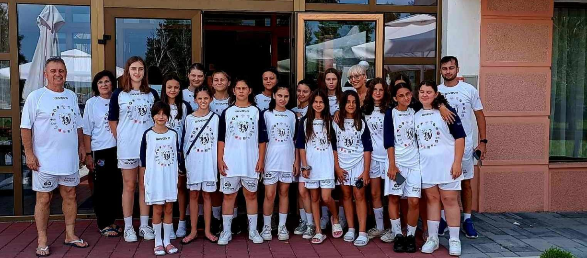

Од Палиќ, Србија испратена третата генерација на животни шампиони
Насмевки, прегратки и нови доживотни пријателства го одбележаа третиот едукативно - спортски камп „Создаваме шампиони за живот“ што се одржа од 2 до 5 јули 2023 година во Палиќ.
Овој пат, конзорциумот отиде чекор подалеку, бидејќи првата генерација женски животни шампиони зачекори на патот кон нови информации, знаења и контакти заедно со третата генерација на животни шампиони, што додаде вредност на овој уникатен собир.
Посебен го направи и неговиот регионален карактер, бидејќи ги обедини еминентните машки и женски фудбалски тимови од Србија, Босна и Херцеговина, Македонија и Црна Гора, ставајќи ја конкуренцијата на задната страна и ставајќи акцент на заедничкото дружење, поврзување и стекнување знаење. Младите спортски екипи на РФК Графичар, Академија Пандев, ФК Слога Добој, ФК Брезница и ЖФК Борец Велес овојпат не беа лут ривали на теренот, туку меѓусебно се поддржуваа во успешното спроведување на сите активности за време на кампот. Концептот кој инсистира дека не може секој да стане врвен спортист - спортски шампион, туку дека преку спортот треба да станат врвни луѓе - животни шампиони, овој пат собра над 170 малечки и нивните тренери, фокусирајќи се на спортот како средство за комуникација на важни општествени пораки , промоција на добри вредности и регионална соработка.
Со еминентни експерти од областа на педагогијата, психологијата и младинската работа, младите учесници на кампот, покрај заедничките спортски активности, имаа можност да се запознаат со фер-плеј и здрава комуникација, градење тимски односи и доверба, како и родова еднаквост во спорт, но и да ги посетат значајните културни и туристички атракции на Палиќ, од кои во посебно сеќавање ќе им остане ЗОО, единствена во овој дел на Европа по својот изглед и содржина.
Од Палиќ си заминаа 170 задоволни насмевки, а конзорциумот продолжува да работи на создавање нови можности за тренерите од помладите категории и нивните млади спортисти, поради што следната активност, планирана за есента 2023 година, е студиска посета со цел понатамошна размена. на педагошкото знаење и искуство во спортот од страна на вклучените тренери. Свесни сме дека задоволните и овластени тренери ќе бидат најдобриот пример за создавање на нова генерација среќни и активни граѓани.
Концептот „Создаваме шампиони за живот“ се спроведува со поддршка на Европската Унија преку програмата ЕРАЗМУС+ во областа на спортот и Фондацијата за деца на УЕФА, но конзорциумот им должи посебна благодарност за совршената организација на кампот на компаниите со кој е воспоставена стабилна соработка на промоција на концептот - SOCCERBET и АМС осигурување.